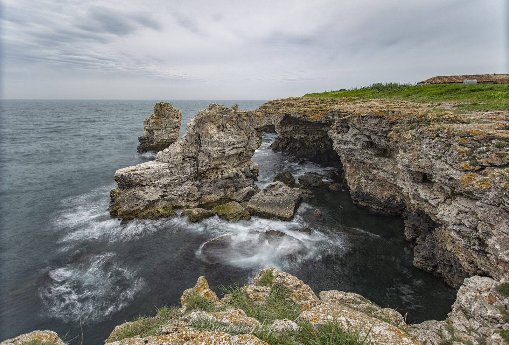
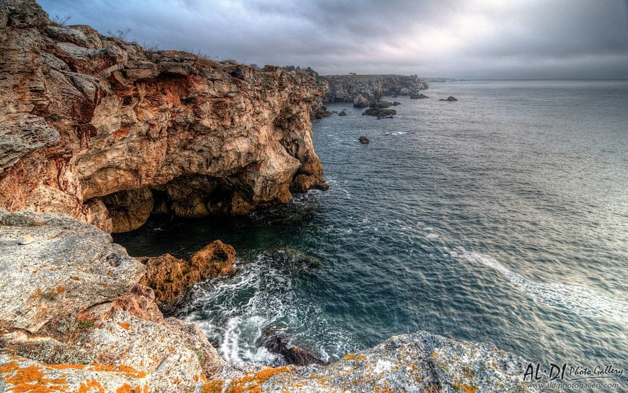
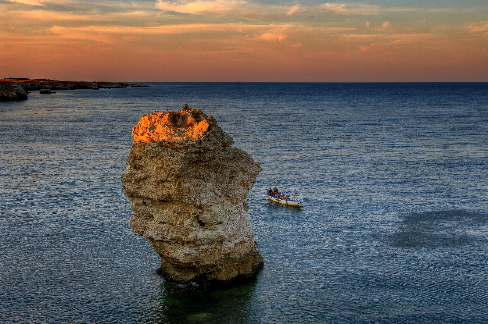

с.Тюленово се намира на около 80 км. от Варна, между с. Камен бряг и фара на нос Шабла. Известно е с уникалния, живописен скалист бряг - осеян с безброй пещери.
Там вълните и вятъра са изваяли причудливи форми в отвесните, нагънати като воал скали. Достатъчно е да заметнеш въдица, за да осигуриш запомняща се вечеря край огъня, а ако нямаш слука, мидите и рапаните тук са в изобилие.
Условията за гмуркане пък са едни от най-добрите на Черноморието. Най-интересната подводна пещера е Тюленовата. Тя е най-дългата - цели 107 метра. Характеризира се като едноетажна, разклонена, преходна. Наблизо се намира и заливът с мегалити - там могат да се видят сфери и слънца, изсечени в камъни.
